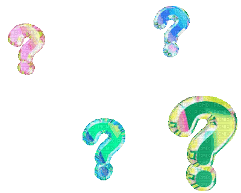
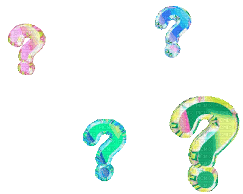

esta página le permite a lxs usuarixs escribir poemas con palabras tomadas —y ajustadas— de "la sociedad y el individuo", uno de los fragmentos más citados de "hacia una nueva libertad", el manifiesto libertario y anarco-capitalista de murray rothbard. la página muestra grupos de 10 palabras aleatorias tomadas del texto. para usar una palabra en su poema haga clic sobre ella. en esta página, los poemas tienen 3 palabras por verso o línea. si desea que alguno o varios de sus versos tengan menos de tres palabras, haga clic sobre los botones que aparecen sin contenido en el listado de palabras. estos botones representan un vacío y cuentan como una palabra. no es posible, por el momento, hacer versos de más de 3 palabras. para ver 10 nuevas palabras haga clic en "mostrar otras palabras", y cuando haya terminado su poema haga clic en "publicar poema".

 
